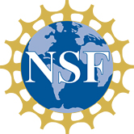
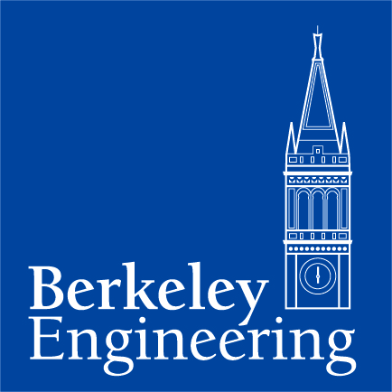
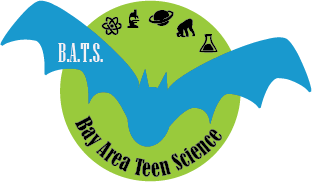
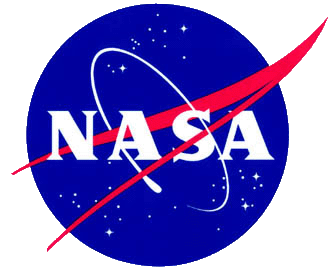

The National Science Foundation (NSF) is an independent federal agency created by Congress in 1950 "to promote the progress of science; to advance the national health, prosperity, and welfare; to secure the national defense…" NSF provides approximately 24 percent of all federally supported basic research conducted by America's colleges and universities in fields such as mathematics, computer science and the social sciences.
At Berkeley Engineering, our researchers are making a global impact by challenging conventions and looking at problems from new angles of inquiry.
Bay Area Teen Science (B.A.T.S.): Science Opportunities and Science-Focused Social Events for Bay Area Teens. B.A.T.S. promotes learning, career building, collaborating, and networking for both audiences to increase the number of Bay Area Teen Scientists. The B.A.T.S. initiative was born from the teen education efforts of UC Berkeley's Multiverse education team at the Space Sciences Laboratory
NASA's Vision: To reach for new heights and reveal the unknown so that what we do and learn will benefit all humankind.
The Lisa and Douglas Goldman Fund is a private foundation committed to providing support for charitable organizations that enhance our society. As natives of San Francisco, the Goldmans place a high priority on projects that have an impact upon the San Francisco community.